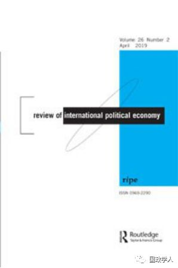
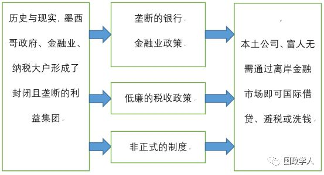
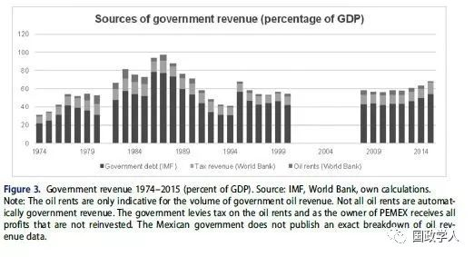

收录于合集

简 介
【作者】 Andrea Binder是英国剑桥大学政治与国际问题研究系（Department of Politics and International Studies）助理教授，国际公共事务研究所兼职研究员，主要研究兴趣在境外融资，人道主义行动，创新与发展等。
【编译】 蔡 宇
【校对】 徐垚晟、刘瑛琛、施 榕
【审核】 杨 洋
【来源】 Andrea Binder. (2019), All exclusive: the politics of offshore finance in Mexico, Review of International Political Economy , 26（2）,313-336, DOI:10.1080/09692290.2019.1567571
【期刊】 Review of International Political Economy（RIPE）是英国国际政治经济学界的代表期刊。该杂志鼓励以跨国别、跨学科、跨研究领域的交叉研究视角对国际贸易与金融、生产与消费、全球治理等问题进行研究，2017年影响因子达2.532。

封闭的圈子：墨西哥离岸金融的政治
All Exclusive: The Politics of Offshore Finance in Mexico

Andrea Binder
来源：https://www.gppi.net/team/andrea-binder
内容提要
**离岸金融 (offshore finance)指设在某国境内，但与该国金融制度无关联，且不受该国金融法规管制的金融机构所进行的资金融通活动。**离岸金融为国内的企业与权贵阶层提供节省税收、逃避管制和洗钱的捷径。传统理论认为，经济对外开放程度高、地理上靠近离岸金融中心、犯罪与腐败问题频发的发展中大国，将受到离岸金融的显著影响。按照这一逻辑，墨西哥往往被认为是受离岸金融显著影响的国家的典型范例，本应显示出庞大的离岸金融服务需求。然而，作者通过深度访谈与银行数据分析，发现墨西哥企业与个人对离岸金融服务的需求相当有限。为探究这一矛盾的成因，基于韦伯式国家的定义，本文分析得出：在历史上， 墨西哥政府、金融业与税收大户形成了一个封闭且垄断的圈子。外国银行主导的金融系统和非正式的政治经济网络，使墨西哥企业和富人不需要利用离岸金融市场洗钱或避税。 该结论具有两个理论意义：第一，它证明了国内制度在离岸金融中的重要性；第二，它说明了在离岸金融需求的分析中，应当更加关注银行业务这一变量。

图 1 文章逻辑结构图
来源：译者自制
正文
**1
** ** ******导言
Introduction
在传统理论中，离岸金融限制了国家权力。从宏观层次而言，离岸金融减少国家的财政收入，损害政策自主性，创造法律实施中的障碍；从微观层次而言，公司与富人群体常常借用离岸金融服务使税收最少化，逃避国内金融管制，取得银行贷款或从事洗钱活动。 根据现有理论，具有开放经济体制、高犯罪与腐败率、地理上靠近离岸金融中心的发展中大国，往往具有庞大的离岸金融服务需求。
令人疑惑的是，尽管墨西哥是一个经济体制开放、犯罪腐败率高、毗邻全球离岸金融服务中心——加勒比海的发展中大国，但实证经验显示，墨西哥离岸金融需求较小。作者试图通过深度访谈与银行数据分析，探究墨西哥的经济行为体对离岸金融服务需求较小的原因。
**2
**
争议中的概念：“离岸金融”与“政府权力”
Contested concepts：offshore finance and state power
为了探究“离岸金融”与“政府权力”的关系，作者首先厘清这两个概念的定义。文中的离岸金融主要指“离岸金融服务”（Offshore financial service）。按照韦伯的说法， **“ 权力”表现为统治集团为其政府及其政治活动筹集资金的能力。**作者认为，韦伯式的定义较好地阐释了政府、纳税人和金融业者三者的关系，从物质的视角阐释了权力的内涵。
作者指出，国内税收(taxation)与银行业务(banking)作为国内政策的组成部分，是离岸金融与政府权力的二者关系中的中间变量。现有文献大多从税收的角度进行分析，却鲜有文章关注银行业在离岸金融服务需求中的作用。
**3
**
墨西哥离岸金融的使用与滥用
The limited uses and abuses of offshore finance
基于上述研究路径，作者对国际清算银行与墨西哥中央银行的数据进行整理，结合对墨西哥商界精英的深度访谈，从实证经验中概括墨西哥离岸金融的总体规模与动机。
在世界范围内，相比经济相对封闭、远离离岸金融中心的巴西，以及发展程度更高、社会治理问题更少的德国，墨西哥本应具备更大的离岸金融服务需求。然而事实上，墨西哥的离岸金融服务占本国GDP的比例却远小于巴西和德国，仅占GDP总额的0.04%至0.2% 。
因此作者认为， 传统的自变量，如国家经济总量的大小、发展程度、经济开放程度、与离岸金融中心距离的远近、国内社会治理程度，无法解释墨西哥离岸金融服务需求不足的现状。因此作者试图从国内政治制度，特别是墨西哥的税收政策与金融政策的角度进行分析。
**4
**
少数人享有的权力：税收与银行
Power without plenty：taxation and banking
**
**
为什么墨西哥的个人和公司不常选择离岸金融服务？作者试图从历史制度主义的视角概括墨西哥国内政治经济结构的历史根源，并探析这一结构对当代墨西哥的影响。
4.1 历史根源
作者回顾了1877年至2000年墨西哥国家现代化建构的进程，说明在民主化进程中，墨西哥政府与银行金融业者的联系比政府与纳税人的联系更为紧密。
表1 历史上墨西哥政府的金融政策与税收政策
时间
|
政策
—|—
波菲利奥·迪亚斯政府时期
（1877-1911）
|
政府与银行金融业者结成紧密联盟，通过吸引外资承包国内油气产业，在不增税的条件下使墨西哥一举摆脱债务困境。
墨西哥革命新政府时期
（1910-1920）
|
新政府颁布了有关石油输出和石油矿藏征税法增税，石油企业的税收一度占政府财政收入的三分之一。
墨西哥革命制度党执政时期（PRI）（1928-1997）
|
新政府恢复了迪亚斯政府时期与银行金融业者的紧密联系。依靠油气产业的税收，外资石油产业的国有化，个人和企业所得税几乎为同时期拉丁美洲国家的最低水平。
然而好景不长，1982年国际油价大跌，政府发放私人浮息票据作为政府债券，将国内银行私有化，阻止有产阶级外流。作为协调海外银行与墨西哥私人阶层的中间借贷方，墨西哥国有银行从净存款方变为净借款方，取消欧洲美元（Eurodollar）在国内的流动性。
1994年墨西哥比索对美元大幅贬值，欧洲美元贷款激增，银行破产，政府不得不再次国有化银行。墨西哥政府与国内银行业关系破裂。
来源：译者自制
2000年后墨西哥政权更迭，福克斯总统上台后，新政府转为与外国银行金融资本建立紧密联系，开放外国银行的准入门槛。由此，墨西哥从一党执政到多党执政的民主化历程周而复始，始终逃不开政府与银行业的私人网络，代议制民主改革收效甚微。
4.2 当代形态
作者认为，由执政党、富裕阶层与利益组织组成的当代墨西哥统治集团，仍然是一个小而封闭的利益圈子，排除了绝大部分墨西哥人参政的可能性。
自墨西哥金融危机后，墨西哥政府的银行金融业政策产生一系列变化。 在银行系统中，墨西哥国有银行逐渐被外国银行所取代，欧洲美元的需求大大降低。外资银行的进驻使得墨西哥银行无需通过境外融资，即可直接向外资银行完成交易。 因此，原本需由墨西哥银行在离岸金融市场交易，以欧洲美元计价的债务，可直接由外国银行以墨西哥比索计价，大大减少了离岸金融服务的需求。
在税收政策方面，时至今日，墨西哥仍然是OECD国家中税收占GDP比例最低的国家。 与此同时，墨西哥政府从向国外发放国债，转为向国内市场发放国债。 如图3所示，主权债务成为国家财政收入的最主要组成部分。因此，墨西哥企业与富裕阶层不需进入境外融资市场即可满足融资需求。除此之外，对现金结算的青睐也是通过境外融资在墨西哥不受欢迎的原因。

综上所述，墨西哥政府与金融业垄断的特性，塑造了墨西哥的税收政策与银行政策，最终使墨西哥境外融资规模维持在较低水平。
**5
**
税收和债务塑造的国家
Tax and debt make the state
**
**
作者认为，上述发现对离岸金融的研究具有两大理论启示。第一，它强调了国内政治制度在塑造国家权力与离岸金融间关系的作用。第二，它揭示了以具体模型探究政府内部权力关系，银行金融业者与纳税人关系的重要性。
第一， **有关于墨西哥境外融资需求不高的实证研究，揭示了 “境外融资影响国家权力”的命题存在因果倒置的逻辑漏洞。**作者提出，国家权力的形态决定了境外融资需求的程度，国内制度与政策是影响一国境外融资需求的变量。
第二， 墨西哥私人非正式利益网络的突出作用，挑战了中间选民的投票倾向、政体种类等基于民主制度分析路径的解释力。 墨西哥历史中，统治集团的垄断性使政治经济精英们倾向于通过小规模的同盟关系募集政治资本，而不倾向于争取中间选民的选票。
第三， 除了制度以外，政府权力的概念化同样具有重要意义。 韦伯的权力定义解释了不同社会团体的利益如何影响税收与银行业务，以及如何在此基础上影响了离岸融资状况。
最后， 墨西哥的案例揭示出税收与债务二者关系的新逻辑。 在金融业提供足额担保的情况下，一国可能在征税前提前采取财政赤字，这被作者称为国家的“第三类国家财政收入”。墨西哥的垄断行业和油气行业扮演着“第三类财政收入”的角色。
**6
**
结 论
**
**
本文经过对墨西哥的案例分析，得出墨西哥的统治集团更倾向于以发行债务而非税收的方式取得国家财政收入的结论。如今，墨西哥以外来银行为主的银行业结构、以及国内非正式制度的发达，使墨西哥人选择境外融资服务的需求较小。 这对“离岸金融服务的使用率越高，国家权力的自主性越低”的传统命题提出挑战。文章转而从国内政治影响经济活动的角度，提出了“国内政治权力的构成决定了离岸金融需求的程度”的命题。
从历史上看，墨西哥统治集团更倾向于以借债，而非提高税收的方式，提高国家的财政收入。 这种倾向在当代表现为两种方式：一是向外国银行提供以墨西哥比索计价的贷款，二是对国内资本的低税负。墨西哥政治和经济权力高度集中的体制与非正式的国内地下网络相互对立，后者为墨西哥个人与企业提供了无需通过境外投资即可避税和洗钱的机会。相较于民主化的政治制度，墨西哥银行所有制结构对离岸融资产生了更大的影响。
**作者预测，未来墨西哥离岸金融的发展态势，将由政府与金融业者关系 (government-financier) 与政府与纳税人关系 (government- taxpayer) 的变化决定。**墨西哥以美元计价为主的债务结构，是政府与金融业者关系的决定性因素。同时，油价的涨落与非正式制度的存续，决定了政府与纳税人的关系。墨西哥作为国别研究的具体个案，揭示出在离岸金融的宏观研究中忽视银行业作用的缺陷。未来，受封闭且垄断的政治经济结构的影响，墨西哥的大公司和富人可能仍将怠于选择离岸金融服务。
_ ** _ 本文由国政学人微信平台独家编译首发**
更多阅读
【重磅速递】约瑟夫·奈：美国霸权的兴衰：从威尔逊到特朗普 | 国政学人
【重磅推荐】巴里·布赞：英国学派视角下的中国崛起 | 国政学人
【重磅速递】米尔斯海默：注定失败：自由主义国际秩序的兴衰 | 国政学人
【国际组织】IO杂志：联合国维和行动的武力运用问题研究 | 国政学人
【国际秩序】为什么自由主义国际秩序理念将美国外交政策引入歧途？| 国政学人
【关系理论】“关系”：世界政治关系理论的中国话语 | 国政学人